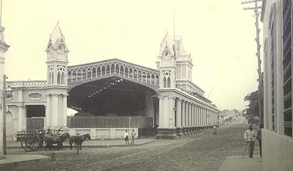

La iniciativa de contar con una línea ferroviaria en el Paraguay, surgió del Presidente Carlos Antonio López en el año 1854, la primera línea ferroviaria fue de Asunción a Villarrica.
Las obras se iniciaron en el año 1857, y se habilitó el tramo desde Arsenales hasta la rivera (cercanías del Puerto de Asunción) y en el año 1859 llegaba hasta la Estación San Francisco ubicada frente a la actual Plaza Uruguaya. En dicho año, se inició la construcción de la Estación Central, bajo la dirección del Maestro Arquitecto Alonso Taylor, quien también dirigió la construcción de las demás estaciones ferroviarias. Alessandro Ravizza ha tenido notable participación en la decoración interna y externa del edificio.
La iniciativa de contar con una línea ferroviaria en el Paraguay, surgió del Presidente Carlos Antonio López en el año 1854, el mismo, contrató a profesionales ingenieros de nacionalidad inglesa (G. Paddison y John W. Whitehead) quienes tuvieron a su cargo la realización de los estudios preliminares y del proyecto para la habilitación de la primera línea ferroviaria: Asunción –Villarrica
En el año 1861, se inaugura el primer tramo desde la Estación Central de Asunción hasta el barrio Trinidad y seis meses después se inauguraba la extensión hasta la ciudad de Luque. En el año 1862, se extiende hasta Areguá. Posteriormente, a través de los años llegó hasta Encarnación. En el año 1863, las crónicas de entonces destacaban a la Estación como "un punto de recreo" admirando "los espaciosos salones con asientos y música con que se obsequia a los paseantes todos los domingos".
El carácter del edificio en estudio, incluye desde reminiscencias neo-góticas a la integración de propuestas claramente paraguayas como ser: Las galerías laterales, y se lo define como una de las obras de mayor interés dentro de la Arquitectura del período del gobierno de Don Carlos Antonio López.
Cuenta con un Museo desde el año 1992, donde se exhiben muebles que contienen documentos y voluminosos libros técnicos y de contabilidad, además, sobresalen en los muebles las iniciales. FCCP tallados. En una de las vitrinas, se exhiben planos originales de las vías desde Asunción hasta el Ferry boat de Encarnación, También se exhiben los planos originales de las locomotoras, Se observan además, relojes de pared, cajas fuertes traídas de Inglaterra, catálogos fotográficos de las locomotoras y vagones diseñados para el Paraguay entre otras cosas. También en el andén principal se encuentra la Locomotora restaurada (año 2000)
Bibliografía:
Gutiérrez Ramón Arq.- Evolución Urbanística y Arquitectónica del Paraguay 1537-1911. Ediciones Comuneros 1983 Asunción Paraguay -páginas 225-226
www.mopc.gov.py
FEPASA-Archivo del Ferrocarril Central del Paraguay
Secretaría Nacional de Cultura-Dirección General de Patrimonio Cultural-Dirección de Registro de Patrimonio-Departamento de Registro de Patrimonio Cultural
Municipalidad de Asunción-Dirección General de Desarrollo Urbano-Dirección de Planeamiento U.-Departamento de Patrimonio Cultural
www.portalguarani.com - Javier Yubi, Museo Histórico Ferroviario